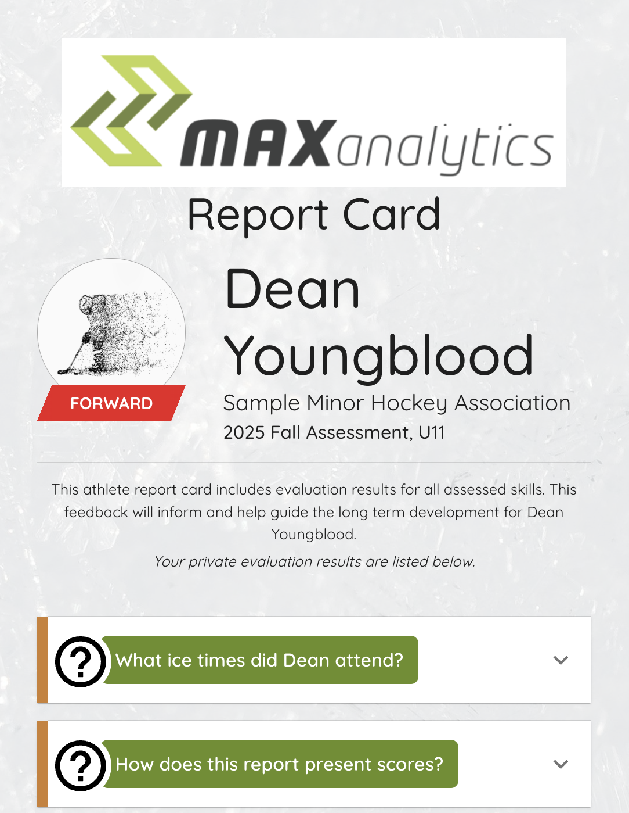
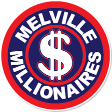

Standards

These are the patterns we see most often when we talk to minor hockey associations about their evaluation process. How many apply to you?
Your evaluations coordinator spends weeks each fall managing a constant stream of emails — ice time notifications, session assignments, schedule changes, and the replies that follow each one. It's one of the most time-consuming parts of the process, and most of it is invisible to the rest of the board.
When a parent challenges a placement, the board has to reconstruct a decision made from paper sheets, evaluator memory, and a spreadsheet built under pressure. There's often no clean answer — and that absence of a defensible process is what erodes trust, long after evaluation season ends.
Evaluators record scores on paper during sessions. Someone transcribes them into a spreadsheet afterward — under time pressure, across multiple sheets, from multiple evaluators. A transposed number or a missed row doesn't announce itself. It just becomes part of the results.
Some players end up placed at a level that doesn't reflect their ability. Without structured, comparative data across sessions, it's difficult to catch before announcements go out — and nearly impossible to correct once the season is underway and teams have formed around those decisions.
Goalie assessment typically relies on one or two evaluators, a general impression, and no structured scoring rubric. There's rarely a way to compare one goalie's session to another's, or to calibrate across evaluators. The result is placements that are hard to explain and easy to challenge.
A player spends weeks going through the evaluation process — and then hears nothing about how they performed. No acknowledgment of what they did well. No direction on what to work on. For families, it's frustrating. For players trying to develop, it's a missed opportunity that the season rarely makes up for.
A typical evaluation block runs four hours — four one-hour sessions — during which Max captures an average of 94 individual skill observations per player. That's not a rounding error or a best-case scenario. That's the standard.
Attempting to collect, record, and manage that volume of data on paper or in a spreadsheet doesn't just slow things down — it forces a choice: either collect far fewer observations (sacrificing accuracy) or collect the same number and accept that errors and omissions are inevitable.
Clean data is the foundation of accurate player placement. Max provides both.
Your evaluation process is one of the most consequential things your association does each fall. These are the questions that help you measure whether it's working — for your volunteers, your families, and most importantly, your players.
"It's a lot of work, but our people are committed." Volunteer dedication is real — but commitment doesn't make the hours sustainable. Most boards have never actually counted what the process costs in time.
When associations add up communication, scheduling, check-in, data entry, auditing, and result distribution, total administrative hours routinely exceed 100–150 hours per evaluation cycle. Those are hours taken from the rest of the season — and from the people you're counting on to show up again next year.
Max automates the administrative burden at every stage of the process. Scroll down to the Volunteer Hours Worksheet to calculate your association's estimated total — and see how many of those hours Max handles automatically.
"We post the team rosters and send out the results." Announcing outcomes isn't the same as explaining them. When families don't understand how decisions were made, trust erodes — and complaints follow.
Transparency means helping every family understand what was assessed, how their player performed, and why placements were made. Without structured scoring and documented criteria, even well-run evaluations are difficult to defend — and families have no way to accept outcomes they can't see.
Max automatically generates a personalized report card for every evaluated player — no manual production required. Placements are backed by auditable scores, not judgment calls. See a sample Gold Report Card here.
"We evaluate to place players on teams — that's what it's for." Team placement is the immediate goal, but it's not the only value the process can deliver. Most associations leave significant upside on the table.
Evaluations are one of the few structured, multi-session assessment moments in a player's year. The data collected — across skating, puck skills, compete level, and positional play — could do far more than determine team placement. It could give players meaningful feedback, inform coaching priorities, and signal where development attention is needed most.
Max captures structured, multi-dimensional player data that goes beyond a placement score. Every player leaves evaluations with a report card they can act on — and coaches start the season with a baseline they can build from.
"We think it went well — we didn't hear many complaints." Most boards use complaint volume as a proxy for accuracy. But families who don't understand the evaluation process rarely know how to raise a concern effectively — and misplaced players often just quietly disengage.
In associations using manual evaluation processes, misplacement rates of 10–20% are not unusual. Paper score sheets get lost or misread. Evaluator bias goes unchecked. Without clean comparative data and a structured audit trail, there's no reliable way to know how accurate your results really were.
Max's algorithmic ranking, bias-calibration tools, and real-time scoring produce player standings that can be reviewed, audited, and defended. Misplacement rates drop significantly — and when questions arise, the answers are in the data.
"Once teams are set, we move on to the season." The evaluation is treated as a gate — pass through it, and it's done. But the data collected represents something more valuable than a placement decision.
Most associations collect rich performance data during evaluations and then file it away. Coaches start the season with no baseline. Players have no reference point for their own development. The evaluation becomes a sorting exercise rather than the investment in player development it could be.
Max preserves evaluation data in a format coaches and players can actually use. Development priorities are visible from day one of the season. Players carry their evaluation results forward — and the process becomes the starting line for a year of growth, not just a mechanism for sorting teams.
Enter a few details about your association below. We'll estimate how many volunteer hours your current evaluation process is likely generating — and show you how many of those Max handles automatically.
| Age Group | Number of Players |
|---|
| Task | Your Process (est. range) | With Max | Hours Saved |
|---|
Most associations produce no individual feedback after evaluations. For 200 players at roughly 10 minutes each, that's 30+ hours of work — which is why it doesn't get done. Players and families leave the process with no idea how they performed.
Due to time pressure, most associations do little or no formal review of evaluation scores before placements are made. Errors in paper-based score sheets — missed entries, transposed numbers, wrong groups — often go undetected until a parent raises a concern.
Placement decisions trigger parent emails and calls that boards rarely budget for in advance. This is already captured in the table above — but many boards are surprised by how much time it consumes, particularly when placements can't be defended with clean data.
The performance data collected during evaluations rarely reaches the coaches who could use it. No formal handoff means coaches start the season without a baseline — and the insights from evaluation are lost.
Every task in the worksheet above corresponds to something Max handles — automatically, accurately, and without adding work for your volunteers. Here's how.
Max handles all parent and player communication about ice times, session assignments, and schedule updates — automatically, throughout the evaluation period. No email queue for your admin coordinator.
Players are automatically assigned to the right evaluation sessions based on division, availability, and session capacity. Changes are handled without manual re-coordination.
Evaluators and administrators check players in digitally on-device. No printer, no clipboard, no lineup confusion at the rink door.
Evaluators score in the app during sessions. Results update within approximately 10 minutes — no waiting for a data entry volunteer to catch up.
When evaluation sessions conclude, player standings are calculated automatically. No director needs to spend a weekend building a spreadsheet.
Every evaluated player receives a detailed, personalized report card — automatically generated, automatically distributed. No manual production.
Max uses algorithmic tools to detect and reduce evaluator bias and inconsistency — so placements reflect player performance, not the tendencies of whoever happened to be scoring that session.
See what a player receives after evaluation →
View Sample Gold Report CardWe're not here to tell you your process is broken. We're here to help you figure out where the opportunities are — and whether Max is the right fit for your association. A 30-minute conversation is usually all it takes.
Book a Demo Learn more about Max Analytics →
Use data-driven solutions to drive real player development and improve athlete retention.
Identify and share a clear understanding of areas for improvement as players progress.
Provide practice plans and learning resources based on the challenges each player is currently facing.
Gain deeper insight into player performance to build teams balanced teams, enabling meaningful competition.
Our software is intuitive and will feel familiar in no time. For any concerns about getting started and training, we're here to help.
Enabled to meet the need of 1-100 team members. Everyone has permissions suited to their use.
We're secured with 256-bit encrypted SSL and PCI compliance, you can be sure your data is safe with us.
Use any device your association has available to perform full-service evaluations: laptop, tablet, mobile.
Don't see the software you use here? We're interested in ensuring Max will work with your current processes.
Let us knowImport players that have registered through HCR directly to Max Analytics.
Keep player information
up to date by connecting SportsEngine to Max Analytics.
Connect TeamSnap to Max Analytics and begin evaluating your rosters.

When asked how easy it was to create the data file from HCR "It took 5 min. I did it while getting ready for work!"
Rydell LaskoI really liked having the opportunity to see the report card. It eliminates that 'in the dark' feeling that we've had in previous tryout evaluations.
BrendaThe new process is a big improvement over past years. We appreciate the move towards a more objective and transparent evaluations process.
TomWe now know that we should invest in power skating instead of a general hockey school.
Kurt